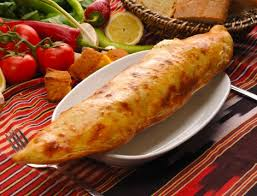
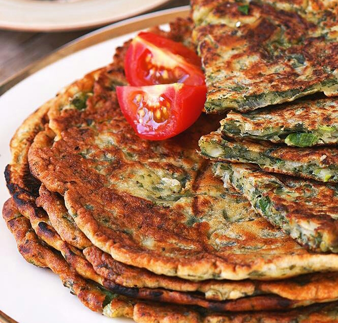
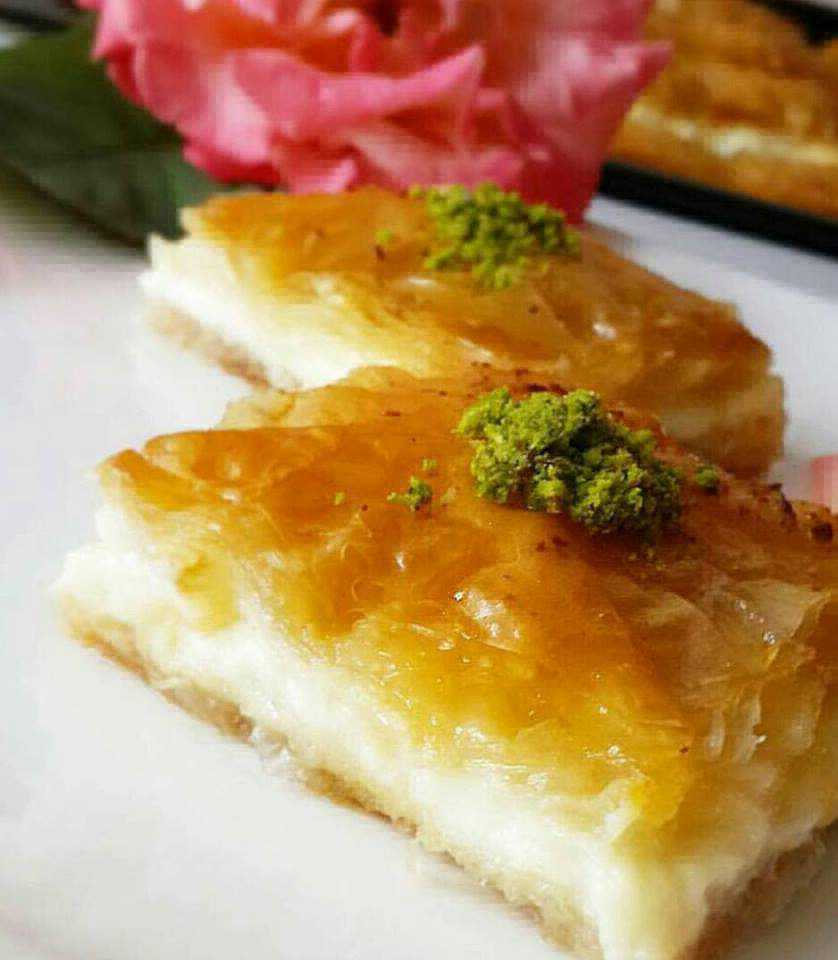
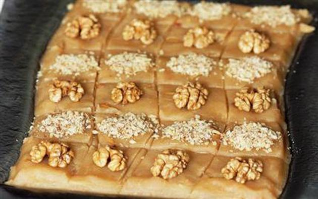

Kuymak dergimize abone olmayı unutmayın!

Tereyağına doyuran en güzel Karadeniz yemekleri
Birbirinden lezzetli, bol tereyağlı yemekleriyle ön plana çıkan Karadeniz mutfağı en az yöre kadar renkli. İşte tereyağına doyuran Karadeniz yemekleri...
Türk mutfağı her yörenin kendine özgü lezzetleriyle bezeli, oldukça geniş tatlara sahip. Kuzeyde yer alan Karadeniz'de kendine özgü nefis lezzetleriyle yıllardır Türk mutfağının en lezzetli yanlarından birini yansıtıyor. Tereyağlı pidelerden, hamsilere, kuymaktan laz helvasına kadar birbirinden güzel birçok yemeği Karadeniz'de tatmak mümkün. Siz de Karadeniz'in bu eşsiz lezzetlerinden tatmak isterseniz rotanızı kuzeye kırmanın tam zamanı...
Trabzon Pidesi

Karadeniz denince akla gelen ilk yemeklerden biri Trabzon pidesi. Mayalı hamurun köy peyniri ile birleşmesinden oluşan bu mükemmel lezzet bugün Karadeniz dışında pek çok ilde de oldukça sevilen bir pide çeşidi. İsteğe göre yumurta ve tereyağı koyacağınız bu pide için Karadeniz'de kesinlikle denenmelidir diyebiliriz.
Tomara Kızartması
Karadeniz yöresine özgü bu lezzet aslında bir sebze. Sapları pişirilerek tüketilen bu sebze mısır unu, tereyağı ve yumurta ile kızartılarak bir krep haline geliyor. Tomara kızartması hem sağlıklı hem de lezzeti yerinde bir yiyecek.
Kuymak
Karadeniz ile özdeşleşmiş olan kuymak artık tüm Türkiye'de bilinen bir tarif. Kolot peyniri, mısır unu ve tereyağını bir araya getirerek yapılan bu enfes yemek için Karadeniz'e gitmeye ve bu geleneksel lezzeti yerinde tatmaya değer.
Pazılı Kaygana

Trabzon mutfağında önemli bir yeri olan kaygana pazı sebzesinin nane, mısır unu ve tereyağı ile birleşmesinden oluşuyor. Böreği andıran bu lezzeti özellikle Trabzon'da denemenizi tavsiye ederiz.
Laz Helvası
İrmik helvasını andıran bu tatlıda irmiğe ek olarak vanilya ve bol tereyağı tatlıya eşlik ediyor. İsteğe göre üzerine tarçın veya dondurma eklenen laz helvası yemeklerin üstüne en çok tüketilen lezzetlerin başında geliyor.
Laz Böreği

Adından tuzlu bir börek gibi algılansa da laz böreği aslında bir tatlı çeşidi. Karadeniz yöresine ait en nefis lezzetlerden bir olan laz böreği hamuru, muhallebi kısmı ve şerbeti ile yapımı zor ama yemesi en keyifli tatlılardan biri. İsteğe göre bu tatlıyı bir iki top sade dondurmayla da yiyebilirsiniz.
Kukuca

Karadeniz mutfağının en sevilen tatlılarından biri de kukuca. Balkabağından yapılan bu eşsiz tarife mısır unu, tereyağı, şeker ve süt eşlik ediyor. Bu tatlıyı sıcak olarak tüketmelisiniz.